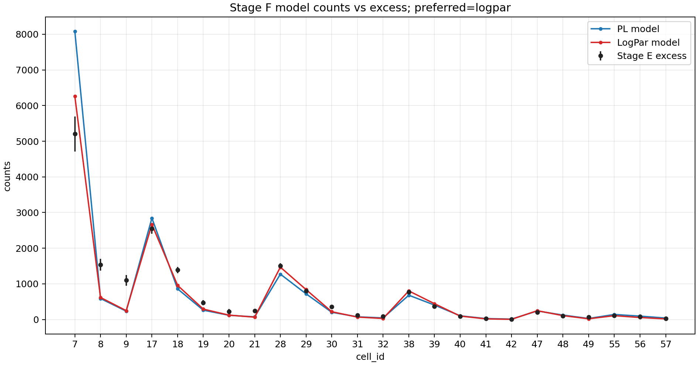
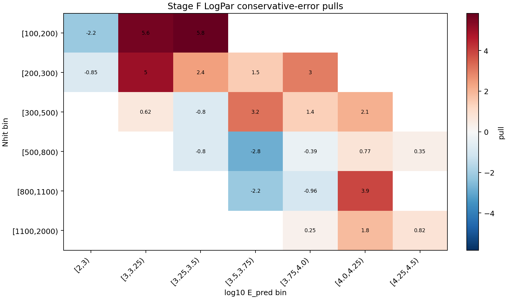
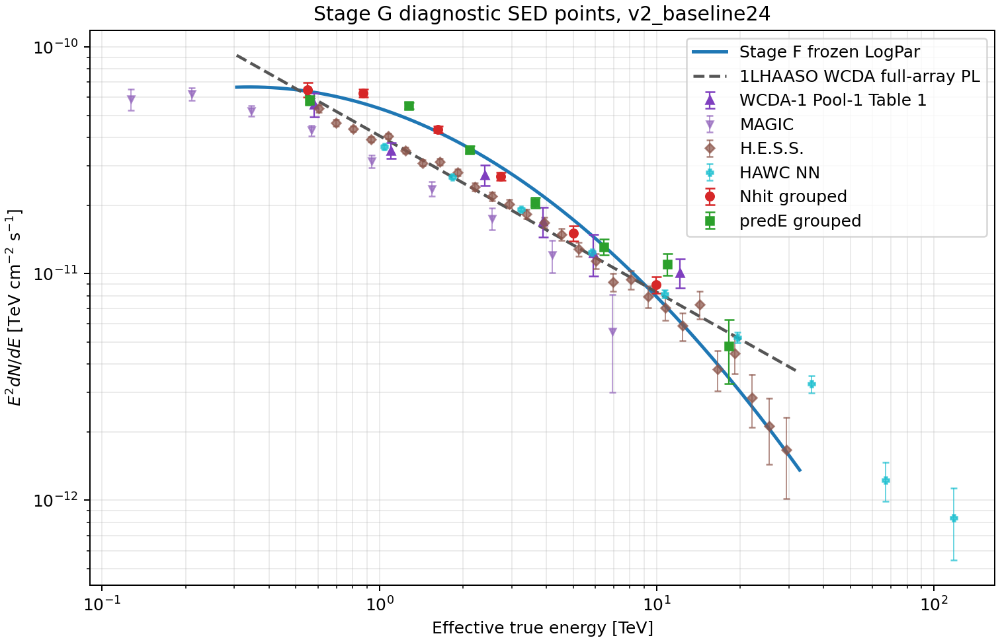
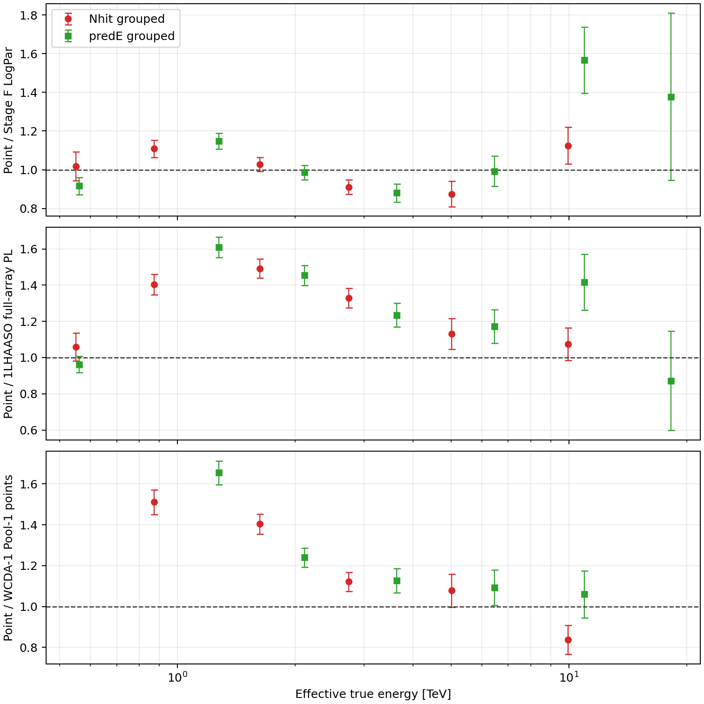
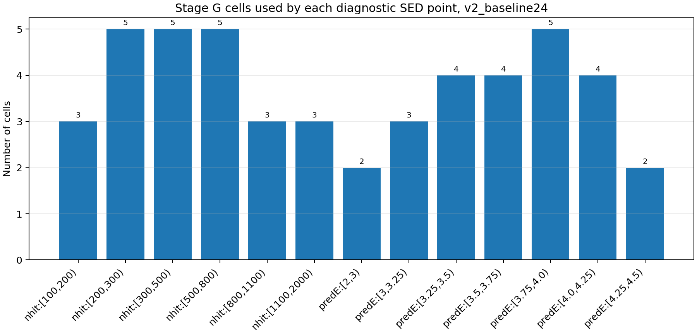

A
raw65 response
- Run
/mnt/mydisk/server/projects/energy_reconstruction/runs/theta_recoxy_position_embed_midenergy_8666- Status
available- Artifacts
- metadata
- Cells: 65
- Response type: primary_thrown_response
- S0: 4.000000e+06 m2
本页把 roadmap v2 的 raw65 ledger、v2_baseline24 selector、Stage A-E raw artifacts、Stage F forward-folding 和 Stage G diagnostic SED 串成一个可追踪结果页。
n/a / n/a。若 background form 是 direct expectation，则 Li-Ma 不适用；Stage E/F/G 的显著性、pull 和 SED residual 只作为 diagnostic 信息，不反向修改 selector。
Roadmap v2 · v2 skymaps · Stage E report · Stage F report · Stage G report
raw65 role 分布：
| role | cells |
|---|---|
| baseline_fit | 26 |
| diagnostic_legacy_low_nhit | 6 |
| diagnostic_low_stat_high_energy | 3 |
| diagnostic_response_tail | 29 |
| transition_probe | 1 |
v2_baseline24 included cells: 7,8,9,17,18,19,20,21,28,29,30,31,32,38,39,40,41,42,47,48,49,55,56,57
excluded / diagnostic cells: 1,2,3,4,5,6,10,11,12,13,14,15,16,22,23,24,25,26,27,33,34,35,36,37,43,44,45,46,50,51,52,53,54,58,59,60,61,62,63,64,65
/mnt/mydisk/server/projects/energy_reconstruction/runs/theta_recoxy_position_embed_midenergy_8666availableslurm_42013promotedv2_stage_c_slurm_42014promotedn/an/an/an/av2_stage_f_baseline24_slurm_42015promoted_physicalv2_stage_g_baseline24_slurm_42015promoted_diagnostic| grouping | group | cells | E_eff TeV | E2 dN/dE | err | ratio StageF model |
|---|---|---|---|---|---|---|
| nhit | [100,200) | 7,8,9 | 0.55028 | 6.49499e-11 | 4.7327e-12 | 1.018 |
| nhit | [200,300) | 17,18,19,20,21 | 0.87165 | 6.26316e-11 | 2.5279e-12 | 1.109 |
| nhit | [300,500) | 28,29,30,31,32 | 1.6222 | 4.33874e-11 | 1.5257e-12 | 1.027 |
| nhit | [500,800) | 38,39,40,41,42 | 2.741 | 2.69065e-11 | 1.1117e-12 | 0.9104 |
| nhit | [800,1100) | 47,48,49 | 5.0196 | 1.50765e-11 | 1.1259e-12 | 0.8747 |
| nhit | [1100,2000) | 55,56,57 | 9.9602 | 8.93081e-12 | 7.4852e-13 | 1.125 |
| predE | [2,3) | 7,17 | 0.56081 | 5.82421e-11 | 2.7849e-12 | 0.9159 |
| predE | [3,3.25) | 8,18,28 | 1.2773 | 5.51692e-11 | 1.9574e-12 | 1.148 |
| predE | [3.25,3.5) | 9,19,29,38 | 2.1135 | 3.52352e-11 | 1.3433e-12 | 0.9861 |
| predE | [3.5,3.75) | 20,30,39,47 | 3.6318 | 2.05856e-11 | 1.0837e-12 | 0.88 |
| predE | [3.75,4.0) | 21,31,40,48,55 | 6.4511 | 1.31415e-11 | 1.0345e-12 | 0.9924 |
| predE | [4.0,4.25) | 32,41,49,56 | 10.951 | 1.10214e-11 | 1.2016e-12 | 1.567 |
| predE | [4.25,4.5) | 42,57 | 18.211 | 4.77836e-12 | 1.5009e-12 | 1.377 |




